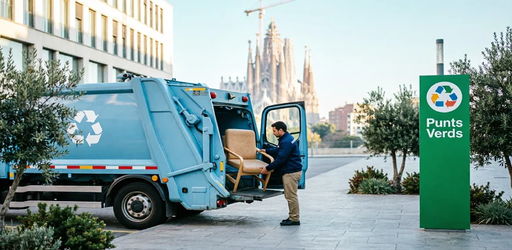
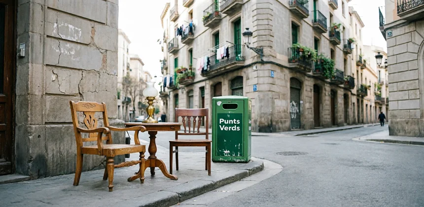

Multas de hasta 3.000€ por dejar muebles en la calle
La Ordenanza Municipal de Residuos de Barcelona sanciona el depósito incontrolado de muebles y enseres en la vía pública. Esta guía le muestra todas las opciones legales y gratuitas para evitarlo.

Tirar muebles en Barcelona no es tan sencillo como parece. Hay normas, horarios, límites por persona y tipos de residuos que no aceptan en todos los puntos. Quien no lo sabe acaba dejando el sofá en la acera el día equivocado, o intentando meter un frigorífico en el contenedor gris, o pagando a alguien que no está autorizado. Esta guía resuelve todas esas dudas con información real y actualizada para 2026.
Las tres opciones principales para deshacerse de enseres en Barcelona
Los Puntos Verdes de Barcelona: tipos, horarios y qué aceptan
Barcelona tiene tres tipos de puntos verdes. No funcionan igual y no aceptan lo mismo. Confundirlos es el error más frecuente.
Puntos Verdes de Zona (Deixalleries de Zona)
Son las instalaciones más completas. Aceptan prácticamente todo tipo de residuo y están abiertas a todas las personas empadronadas en Barcelona. Algunos aceptan también pequeños escombros de reformas domésticas.
Besòs (Selva de Mar), Clot (Bilbao), Gràcia (Sant Antoni Maria Claret), Horta (Selva del Camp), Les Corts (Riera Blanca), Nou Barris (Escocia), Sant Andreu (Gran de Sant Andreu), Sant Martí (Pallars), Sants-Montjuïc (Creu Coberta), Sarrià-Sant Gervasi (Montserrat Isern). Consulte la web del Ayuntamiento para confirmar horarios actualizados: barcelona.cat
Mapa de los 10 Puntos Verdes de Zona en Barcelona
Haga clic en cada marcador para ver la dirección completa · Mapa interactivo con zoom · Datos: OpenStreetMap
Puntos Verdes de Barrio
Son más pequeños y tienen horario más reducido. Ideales para residuos cotidianos: aceites de cocina, pilas, fluorescentes, ropa, medicamentos, cartuchos de tinta. No aceptan escombros ni muebles grandes. Hay más de 30 repartidos por los barrios de la ciudad.
Puntos Verdes Móviles
Son camiones que recorren los barrios con calendario rotativo. Aceptan residuos pequeños: pilas, medicamentos, aceite, ropa, pequeños electrodomésticos. No son adecuados para muebles o voluminosos.
| Tipo | Muebles | Electrodomésticos | Escombros | Residuos peligrosos | Gratuito |
|---|---|---|---|---|---|
| Punto Verde de Zona | Sí | Sí | Pequeñas cantidades | Sí | Sí |
| Punto Verde de Barrio | No | Solo pequeños | No | Sí | Sí |
| Punto Verde Móvil | No | Solo pequeños | No | Algunos | Sí |
| Recogida Municipal | Sí | Sí | No | No | Sí (límite) |
Cómo solicitar la recogida municipal gratuita de voluminosos
El Ayuntamiento de Barcelona ofrece un servicio de recogida a domicilio de muebles y electrodomésticos completamente gratuito para los residentes. Funciona bien para 1–3 objetos ocasionales. Esto es exactamente cómo funciona:
- Solicite cita Llame al 010 (desde Barcelona) o al 93 413 00 00, o acceda a la web del Ayuntamiento en barcelona.cat/voluminosos. También puede hacerlo presencialmente en cualquier oficina de atención ciudadana.
- Especifique los objetos Indique tipo, cantidad y tamaño aproximado de lo que quiere retirar. El servicio tiene un máximo de 3 objetos por solicitud y 12 por año y vivienda.
- Reciba confirmación Le indicarán la fecha de recogida (normalmente entre 2 y 5 días hábiles) y el horario en que debe sacar los objetos.
- Saque los objetos a la calle Únicamente el día indicado y a partir de las 20:00h del día anterior. No antes. Sacarlos fuera de ese horario tiene las mismas consecuencias que tirarlos sin avisar.
- No bloquee el paso Coloque los objetos junto a la acera, sin obstaculizar la circulación peatonal ni el acceso a portales.
Máximo 3 objetos por solicitud · Máximo 12 objetos por año y vivienda · No se recogen escombros de obras · No se recogen residuos peligrosos (pinturas, aceites, productos químicos) · El servicio es solo para particulares, no para empresas · Sacar los objetos fuera del horario indicado puede dar lugar a sanción.
Multas por dejar muebles en la calle: cuánto y cuándo
La Ordenanza de Medi Ambient de Barcelona y la normativa estatal de residuos regulan lo que puede y no puede hacerse con los enseres domésticos. Las sanciones son reales y se aplican:
| Infracción | Tipo | Multa |
|---|---|---|
| Dejar muebles en la calle sin autorización | Grave | 750€ – 1.500€ |
| Depositar residuos en zonas no habilitadas | Grave | 750€ – 1.500€ |
| Gran volumen o reincidencia | Muy grave | 1.500€ – 3.000€ |
| Sacar objetos fuera del horario autorizado | Grave | 750€ – 1.500€ |
| Tirar residuos peligrosos en contenedor ordinario | Muy grave | Hasta 3.000€ |
Además de la multa, el infractor puede ser obligado a costear la limpieza y retirada a cargo municipal. Si la policía no puede identificar al infractor, el propietario del inmueble más próximo puede ser investigado.
Qué hacer con cada tipo de objeto: guía práctica
Sofás y sillones
Son los objetos más solicitados en el servicio de recogida municipal. Si está en buen estado, intente donarlo antes: Cáritas, Cruz Roja o Wallapop.
- Recogida municipal gratuita (hasta 3 por solicitud)
- Punto Verde de Zona (desmontarlo facilita el transporte)
- Si tiene valor: Wallapop o grupos de donación
Colchones y somieres
No pueden ir al contenedor normal. Ocupan mucho volumen y requieren gestión específica. En Barcelona hay un sistema de recogida específico para colchones.
- Recogida municipal: la opción más cómoda
- Punto Verde de Zona: si lo puede transportar
- Al comprar uno nuevo: muchas tiendas retiran el viejo
Electrodomésticos grandes
Neveras, lavadoras, lavavajillas, microondas y hornos son RAEE (residuos de aparatos eléctricos). El vendedor está legalmente obligado a retirar el viejo al entregar el nuevo.
- Al comprar nuevo: recogida gratuita obligatoria del vendedor
- Punto Verde de Zona (solo si funcionan sin gases peligrosos)
- Recogida municipal (requiere cita previa)
Frigoríficos y congeladores
Contienen CFC o HFC, gases regulados por normativa ambiental. Solo pueden manipularse en instalaciones autorizadas. No los lleve a puntos verdes de barrio.
- Punto Verde de Zona: tienen instalación autorizada
- Al comprar nuevo: la tienda está obligada a retirarlo
- Recogida municipal: requiere indicar que es frigorífico
Escombros y restos de obra
Son el tipo de residuo con más restricciones. El servicio municipal no los recoge. Los puntos de barrio tampoco. Solo los puntos verdes de zona aceptan pequeñas cantidades.
- Pequeñas cantidades: Punto Verde de Zona
- Obras importantes: empresa gestora autorizada
- Contenedor privado homologado para reformas
Electrónica y pequeños aparatos
Teléfonos, ordenadores, tablets, impresoras. Son RAEE y no deben tirarse al contenedor de basura normal. Muchas tiendas tienen puntos de recogida gratuitos.
- Puntos verdes de barrio: los más cercanos
- Tiendas tecnológicas: muchas tienen contenedores
- Fabricantes: programas de devolución (Apple, Samsung...)
Ropa y calzado
Barcelona tiene más de 900 contenedores de ropa naranja. Nunca tire ropa al contenedor de basura: siempre tiene salida, ya sea como ropa de segunda mano o para reciclaje textil.
- Contenedores naranjas (Humana y otros): en toda la ciudad
- Puntos verdes: también aceptan ropa
- Cáritas, Cruz Roja: si está en buen estado
- Wallapop o Vinted: si tiene valor
Residuos peligrosos
Pinturas, barnices, disolventes, pesticidas, aceites de motor, baterías de coche, productos de limpieza concentrados. Nunca al contenedor normal ni a la calle.
- Solo en puntos verdes con instalación autorizada
- Farmacias: para medicamentos caducados
- Baterías de coche: talleres y tiendas de coches

Trastos de mudanzas y pisos heredados
Son los casos más complejos porque la cantidad es grande y los objetos son muy variados. El servicio municipal sirve para dar salida a 3–4 objetos, pero si el piso está lleno, se necesita otra estrategia. Para herencias, el volumen típico supera con creces los límites de la recogida municipal, y los plazos del ayuntamiento no siempre encajan con los plazos de la operación inmobiliaria.
En estos casos, vaciado por herencia o liquidación de herencias una empresa especializada es la única opción práctica que permite gestionar todo en 24–48 horas con certificación legal completa.
¿Tiene un piso lleno que vaciar en Barcelona?
Gestionamos todo el residuo, clasificamos, certificamos y dejamos el piso listo. Presupuesto gratuito en menos de 24 horas.
Errores comunes y cómo evitarlos
-
Dejar muebles en la calle el día equivocado
Solo puede sacarlos el día indicado en la cita, a partir de las 20:00h. Sacarlos antes es sancionable aunque haya pedido cita.
✓ Solución: confirme la fecha exacta al pedir la cita y márquese un recordatorio. -
Intentar tirar escombros en el punto verde de barrio
Los puntos verdes de barrio no aceptan escombros. Solo los de zona. Hacer el viaje para nada es frustrante y frecuente.
✓ Solución: lleve los escombros siempre a un Punto Verde de Zona, no de barrio. -
Meter el frigorífico en el contenedor de envases o basura
Es una infracción grave y contamina. Los frigoríficos contienen gases que solo pueden manipularse en instalaciones autorizadas.
✓ Solución: Point Verde de Zona o recogida municipal especificando que es frigorífico. -
Dejar un mueble en la calle con cartel de "gratis"
Aunque la intención sea donarlo, es un depósito no autorizado y puede ser multado. La policía no distingue intenciones.
✓ Solución: use Wallapop, Milanuncios o grupos de donación de Facebook para regalar muebles. -
Contratar a alguien sin autorización de gestor de residuos
Hay personas que cobran por retirar muebles y los tiran en descampados. El propietario original puede ser responsable subsidiario.
✓ Solución: exija siempre certificado de gestor de residuos autorizado y albarán de entrega a planta. -
No saber que la recogida tiene límite anual
El servicio municipal solo permite 12 objetos al año por vivienda. Quien vacía un piso completo y confía solo en esto se queda a medias.
✓ Solución: para vaciados completos, combine servicios o contrate empresa especializada.
Alternativas sostenibles: donar, reutilizar y vender
Antes de tirar, piense si el objeto puede tener una segunda vida. Muchos muebles, electrodomésticos y enseres en buen estado tienen salida real, ya sea vendiéndolos, donándolos o entregándolos a entidades sociales.
Entidades sociales
Cáritas: recoge muebles y ropa para familias en dificultad.
Cruz Roja: campañas periódicas de recogida de enseres.
Banc dels Aliments: enseres de cocina y menaje.
Plataformas digitales
Wallapop: venta o regalo de muebles con foto y descripción.
Milanuncios: alternativa con larga trayectoria.
Facebook Marketplace: grupos locales de intercambio gratuito.
Tiendas de segunda mano
Barcelona tiene decenas de tiendas de segunda mano que compran muebles, vajillas, libros, ropa y objetos decorativos. Especialmente en barrios como Gràcia, El Born o Sant Antoni.
Reparación y upcycling
Muchos muebles pueden tener una segunda vida con lijado, pintura o pequeñas reparaciones. Barcelona tiene talleres de upcycling y makers que dan formación para transformar lo que parece inútil.
Mercadillos y rastros
El Encants Vells (Glòries), el mercadillo de Sant Antoni los domingos o el rastro del Maresme son opciones para vender objetos con cierto valor estético o de colección.
Vecinos y comunidad
Muchos portales tienen grupos de WhatsApp o tablones donde se ofrece mobiliario. Un armario de un vecino puede convertirse en el armario del vecino de arriba sin salir del edificio.
Antes de llevar algo al punto verde, dedique 5 minutos a una publicación en Wallapop o a una llamada a Cáritas. El impacto ambiental de reutilizar es mucho mayor que el de reciclar.
Cuándo conviene contratar una empresa de vaciado
El servicio municipal es excelente para casos cotidianos: un sofá viejo, una lavadora que ya no funciona, unas sillas que sobran. Pero hay situaciones en las que claramente se necesita algo más.
Vaciado completo de piso
El servicio municipal tiene límite de 12 objetos al año. Un piso con 30 años de historia tiene cientos de objetos. Solo una empresa puede vaciarlo en 1–2 días.
Herencias y defunciones
Hay plazos notariales y de compraventa que no esperan. Además, el manejo de los objetos personales de un familiar requiere sensibilidad y experiencia.
Mudanzas urgentes
Si el piso hay que dejarlo libre en 48 horas y está lleno, el servicio municipal (2–5 días de espera) no es una opción. Una empresa puede hacerlo en el mismo día.
Síndrome de Diógenes
Requiere equipos especializados, protocolos de seguridad, desinfección y gestión de residuos peligrosos. No es trabajo para una persona sola ni para el servicio municipal.
Personas mayores o con movilidad reducida
Llevar muebles a un punto verde o sacarlos a la calle puede ser físicamente imposible para algunas personas. Una empresa lo hace sin esfuerzo por su parte.
Locales comerciales y trasteros
El servicio municipal es solo para viviendas. Para un local, una tienda o un almacén que hay que vaciar, la única opción autorizada es una empresa gestora de residuos.
Se necesita certificado legal
Para trámites notariales, compraventa de inmuebles o procesos judiciales puede necesitar acreditar la correcta gestión de residuos. Solo una empresa autorizada puede emitir ese certificado.
Cambio de inquilinos con urgencia
Inmobiliarias y propietarios que necesitan preparar el piso rápido entre contratos. Un servicio integral (vaciado + limpieza + pintura) en 2–3 días hace el piso rentable de nuevo.
VaciadoDePisos.cat: gestión integral sin complicaciones
Somos una empresa local con sede en Sant Pere de Ribes, especializada en vaciado de pisos en Barcelona y toda la provincia. No somos intermediarios: nuestro equipo hace el trabajo, con presupuesto cerrado y sin sorpresas.
Lo que incluye nuestro servicio
- Clasificación completa de todos los residuos: lo que tiene valor se valora, lo que puede donarse se dona, lo demás se gestiona legalmente
- Gestión legal de residuos con certificado de eliminación según normativa de la Agencia de Residuos de Cataluña
- Presupuesto cerrado: lo que acordamos es lo que paga, sin costes adicionales
- Servicio urgente en 24–48 horas, incluidos fines de semana
- Discreción total en situaciones sensibles (defunciones, herencias, Diógenes)
- Sin límite de volumen: desde una habitación hasta un piso completo o una nave industrial
Trabajamos con familias que gestionan herencias, propietarios que cambian inquilinos, inmobiliarias que preparan pisos para la venta y personas mayores que necesitan apoyo. No vendemos: acompañamos.
¿Necesita gestionar el vaciado de un piso en Barcelona?
Le visitamos, valoramos y le damos un presupuesto cerrado gratuito en menos de 24 horas.
Comparativa de opciones: ¿cuál es mejor para su caso?
| Opción | Coste | Plazo | Límite | Ideal para |
|---|---|---|---|---|
| Punto Verde de Zona | Gratis | Inmediato | Volumen transportable | 1–5 objetos, cualquier tipo |
| Punto Verde de Barrio | Gratis | Inmediato | Sin escombros, sin voluminosos | Pilas, aceite, ropa, electrónica pequeña |
| Recogida municipal | Gratis | 2–5 días | 3 obj/vez · 12/año | Muebles y electrodomésticos sueltos |
| Empresa especializada | 250–2.500€ | 24–48h | Sin límite | Pisos completos, herencias, urgencias |
| Contenedor privado | 300–800€ | 1–3 días | 6–10 m³ | Reformas y escombros medianos |
| Donación / Wallapop | Gratis | Variable | Solo objetos en buen estado | Muebles y objetos con valor |
Preguntas frecuentes
Tiene tres opciones gratuitas: los Puntos Verdes de Zona o de Barrio (deixalleries), la recogida municipal de voluminosos solicitando cita en el 010 o en la web del Ayuntamiento, y los puntos verdes móviles para objetos pequeños. Las tres son completamente gratuitas para particulares empadronados en Barcelona.
El servicio de recogida municipal permite un máximo de 3 objetos por solicitud y 12 objetos por año y vivienda. Los objetos deben sacarse a la calle el día indicado a partir de las 20:00h del día anterior. El servicio tarda entre 2 y 5 días hábiles desde que pide la cita.
La Ordenanza Municipal establece multas de 750€ a 3.000€ por depositar muebles en la vía pública fuera de los sistemas autorizados. La cuantía depende del volumen, la reincidencia y si se puede identificar al infractor. Además el infractor puede ser obligado a costear la limpieza.
No. Los colchones no pueden ir a ningún contenedor convencional. Debe llevarlos a un Punto Verde de Zona o solicitar la recogida municipal de voluminosos. Dejarlo en la calle o en un contenedor sin autorización puede acarrear multa de hasta 3.000€. Al comprar uno nuevo, muchas tiendas están obligadas a retirar el viejo.
Tres opciones: llevarlo a un Punto Verde de Zona (tienen instalación autorizada para gases), solicitar la recogida municipal indicando que es frigorífico, o aprovechar que al comprar uno nuevo la tienda está legalmente obligada a retirar el viejo (según el Real Decreto sobre RAEE). No lo lleve a un punto verde de barrio: no tienen instalación para gases refrigerantes.
Para pequeñas cantidades de escombros, los Puntos Verdes de Zona los aceptan (consulte el límite vigente en cada instalación). El servicio municipal de recogida no recoge escombros. Para reformas más grandes es obligatorio contratar un gestor de residuos de construcción autorizado o alquilar un contenedor homologado.
No. Aunque la intención sea regalar el mueble, dejarlo en la vía pública sin autorización es un depósito incontrolado de residuos y puede ser sancionado. La alternativa legal es publicarlo en Wallapop, Milanuncios o grupos de donación de Facebook, o contactar con Cáritas o Cruz Roja.
Los herederos son responsables de la correcta gestión. Para pisos completos, contratar una empresa de vaciado especializada es la solución más práctica: gestionan y certifican legalmente cada tipo de residuo, lo que puede ser necesario para trámites notariales o de compraventa. El límite de 12 objetos del servicio municipal no es suficiente para la mayoría de pisos heredados.
Pida siempre el número de registro como transportista de residuos en la Agencia de Residuos de Cataluña (ARC) y exija que le entreguen un albarán o certificado de entrega a gestor autorizado. Sin esa documentación, usted sigue siendo responsable de los residuos aunque los haya entregado a otra persona.
Barcelona tiene más de 900 contenedores de ropa de color naranja repartidos por toda la ciudad, gestionados por Humana y otras entidades. También puede llevarla a puntos verdes o directamente a Cáritas, Cruz Roja o tiendas de segunda mano. Si tiene ropa de marca o en buen estado, Vinted o Wallapop son buenas opciones para venderla.
En algunos casos sí. Si el piso contiene muebles con valor de mercado, antigüedades, colecciones o electrodomésticos en buen estado, el valor recuperado puede compensar total o parcialmente el coste del servicio. Descubra cuándo el vaciado puede ser gratuito. En 2025-2026, aproximadamente el 30% de nuestros clientes obtuvieron vaciados gratuitos o con compensación.
Resumen y recomendaciones finales
Gestionar correctamente los muebles y enseres en Barcelona no es difícil si se conocen las opciones. La clave es elegir la correcta según el volumen y la urgencia:
Guía rápida de decisión
- 1–3 objetos sin urgencia: recogida municipal gratuita (cita en el 010)
- Cualquier cantidad, puede transportarlos: Punto Verde de Zona
- Electrodoméstico al comprar uno nuevo: la tienda está obligada a retirarlo
- Residuos peligrosos (pinturas, aceites, pilas): solo en puntos verdes autorizados
- Ropa y textil: contenedores naranjas o donación
- Piso completo, herencia, urgencia o empresa: empresa de vaciado especializada
Lo más importante es no dejar nada en la calle sin autorización. Las multas son reales, el impacto ambiental también. Y en la mayoría de los casos, hay una opción gratuita perfectamente válida.